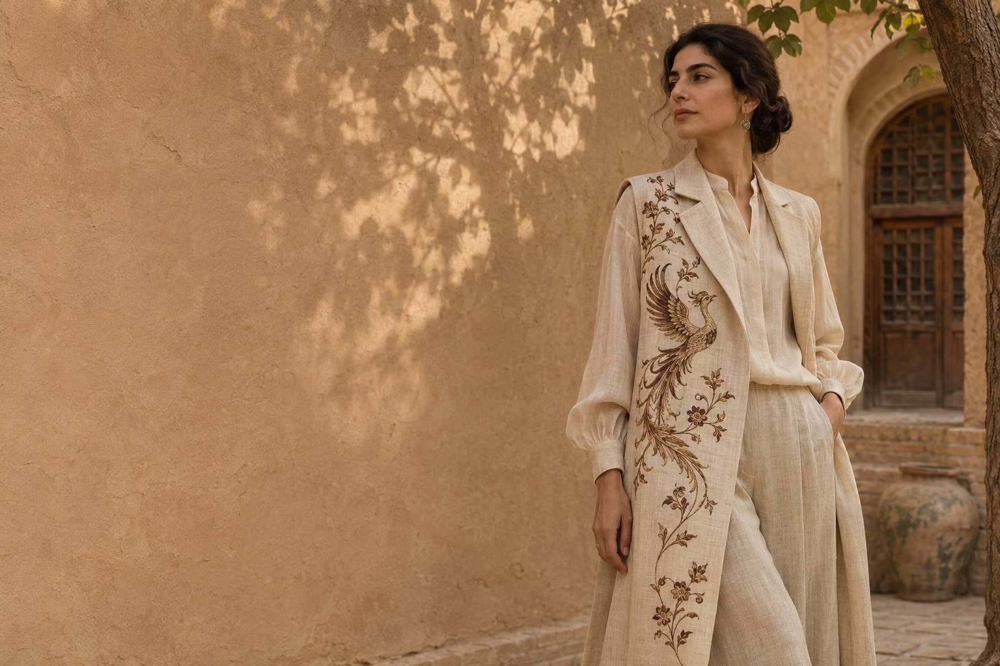
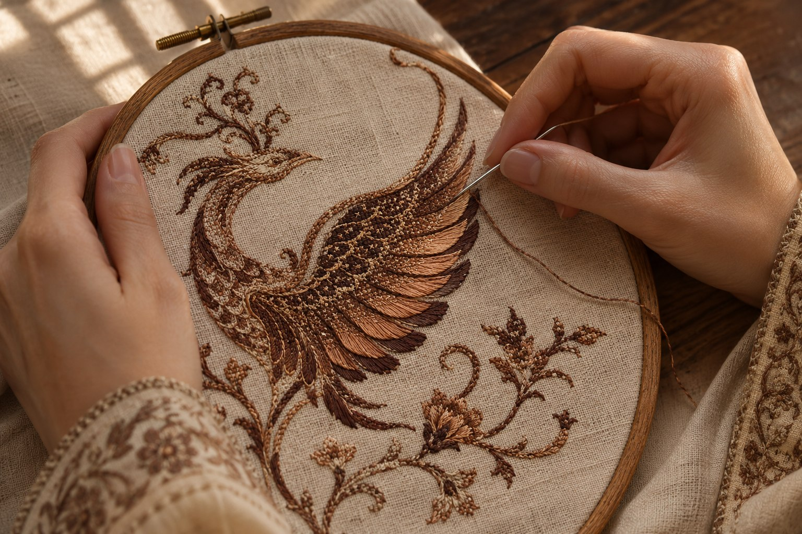

افسانهای که ادامه دارد

HOOYA — THE ART OF STORYTELLINGTHE HOOYA SELECTION
انتخابهای هویا
لباسی با این نام پیدا نشد. واژهٔ دیگری را امتحان کنید.
پیشنمایش مجموعه · لباسها و تصاویر این دمو مفهومیاند
کشف جهانِ روایتهاTHE WORLDS OF HOOYA
یک لباس، یک جهان
روایتی را پیدا کن که به دنیای تو نزدیکتر است.
برای روحهای آزاد
رخش؛ شکوهِ حرکت
جهانِ خودت را انتخاب کن

THE HOOYA ATELIER
هنر، در تار و پود.
هر کوک، پیوندی میان میراث و امروز.
خانهٔ هویا
هویا روایتگر افسانهها، اساطیر و نمادهای ایران است.
هر لباس با دوخت دستی مزین شده و میراثدار هنر شمارهدوزی و ابریشمدوزی ایرانیست.